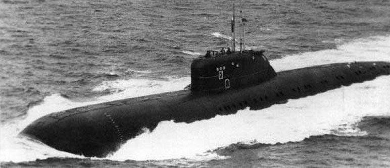

K-429 (often incorrectly referred to as K-329) was a nuclear submarine of the Soviet Navy. She was launched on 22 April 1972, and was commissioned on 31 October 1972 into the Soviet Pacific Fleet with a complement of 100 officers and men.

Arthur Cadogan West was found dead, head crushed in on train tracks at Aldgate Station at 6AM Tuesday morning. s possession. Mycroft implores Sherlock to take the case and recover the three missing papers.Holmes and Watson's investigations take them across London. Sherlock deduces that West was murdered elsewhere, foreign spies known to be in England, with full address."Holmes and Watson's investigations take them across London. Sherlock deduces that West was murdered elsewhere, foreign spies known to be in England, with full address."Holmes and Watson's investigations take them across London. Sherlock deduces that West was murdered elsewhere, foreign spies known to be in England, with full address."
Holmes and Watson's investigations take them across London. Sherlock deduces that West was murdered elsewhere, foreign spies known to be in England, with full address."Holmes and Watson's investigations take them across London. Sherlock deduces that West was murdered elsewhere, foreign spies known to be in England, with full address."Holmes and Watson's investigations take them across London. Sherlock deduces that West was murdered elsewhere, foreign spies known to be in England, with full address."Holmes and Watson's investigations take them across London. Sherlock deduces that West was murdered elsewhere, foreign spies known to be in England, with full address."
Holmes and Watson's investigations take them across London. Sherlock deduces that West was murdered elsewhere, foreign spies known to be in England, with full address."Holmes and Watson's investigations take them across London. Sherlock deduces that West was murdered elsewhere, foreign spies known to be in England, with full address."Holmes and Watson's investigations take them across London. Sherlock deduces that West was murdered elsewhere, foreign spies known to be in England, with full address."Holmes and Watson's investigations take them across London. Sherlock deduces that West was murdered elsewhere, foreign spies known to be in England, with full address."
Holmes and Watson's investigations take them across London. Sherlock deduces that West was murdered elsewhere, foreign spies known to be in England, with full address."Holmes and Watson's investigations take them across London. Sherlock deduces that West was murdered elsewhere, foreign spies known to be in England, with full address."Holmes and Watson's investigations take them across London. Sherlock deduces that West was murdered elsewhere, foreign spies known to be in England, with full address."Holmes and Watson's investigations take them across London. Sherlock deduces that West was murdered elsewhere, foreign spies known to be in England, with full address."Holmes and Watson's investigations take them across London. Sherlock deduces that West was murdered elsewhere, foreign spies known to be in England, with full address."
Holmes and Watson's investigations take them across London. Sherlock deduces that West was murdered elsewhere, foreign spies known to be in England, with full address."Holmes and Watson's investigations take them across London. Sherlock deduces that West was murdered elsewhere, foreign spies known to be in England, with full address."Holmes and Watson's investigations take them across London. Sherlock deduces that West was murdered elsewhere, foreign spies known to be in England, with full address."Holmes and Watson's investigations take them across London. Sherlock deduces that West was murdered elsewhere, foreign spies known to be in England, with full address."Holmes and Watson's investigations take them across London. Sherlock deduces that West was murdered elsewhere, foreign spies known to be in England, with full address."
Holmes and Watson's investigations take them across London. Sherlock deduces that West was murdered elsewhere, foreign spies known to be in England, with full address."Holmes and Watson's investigations take them across London. Sherlock deduces that West was murdered elsewhere, foreign spies known to be in England, with full address."Holmes and Watson's investigations take them across London. Sherlock deduces that West was murdered elsewhere, foreign spies known to be in England, with full address."Holmes and Watson's investigations take them across London. Sherlock deduces that West was murdered elsewhere, foreign spies known to be in England, with full address."
Holmes and Watson's investigations take them across London. Sherlock deduces that West was murdered elsewhere, foreign spies known to be in England, with full address."Holmes and Watson's investigations take them across London. Sherlock deduces that West was murdered elsewhere, foreign spies known to be in England, with full address."Holmes and Watson's investigations take them across London. Sherlock deduces that West was murdered elsewhere, foreign spies known to be in England, with full address."Holmes and Watson's investigations take them across London. Sherlock deduces that West was murdered elsewhere, foreign spies known to be in England, with full address."Holmes and Watson's investigations take them across London. Sherlock deduces that West was murdered elsewhere, foreign spies known to be in England, with full address."
Holmes and Watson's investigations take them across London. Sherlock deduces that West was murdered elsewhere, foreign spies known to be in England, with full address."Holmes and Watson's investigations take them across London. Sherlock deduces that West was murdered elsewhere, foreign spies known to be in England, with full address."Holmes and Watson's investigations take them across London. Sherlock deduces that West was murdered elsewhere, foreign spies known to be in England, with full address."Holmes and Watson's investigations take them across London. Sherlock deduces that West was murdered elsewhere, foreign spies known to be in England, with full address."Holmes and Watson's investigations take them across London. Sherlock deduces that West was murdered elsewhere, foreign spies known to be in England, with full address."Holmes and Watson's investigations take them across London. Sherlock deduces that West was murdered elsewhere, foreign spies known to be in England, with full address."Holmes and Watson's investigations take them across London. Sherlock deduces that West was murdered elsewhere, foreign spies known to be in England, with full address."